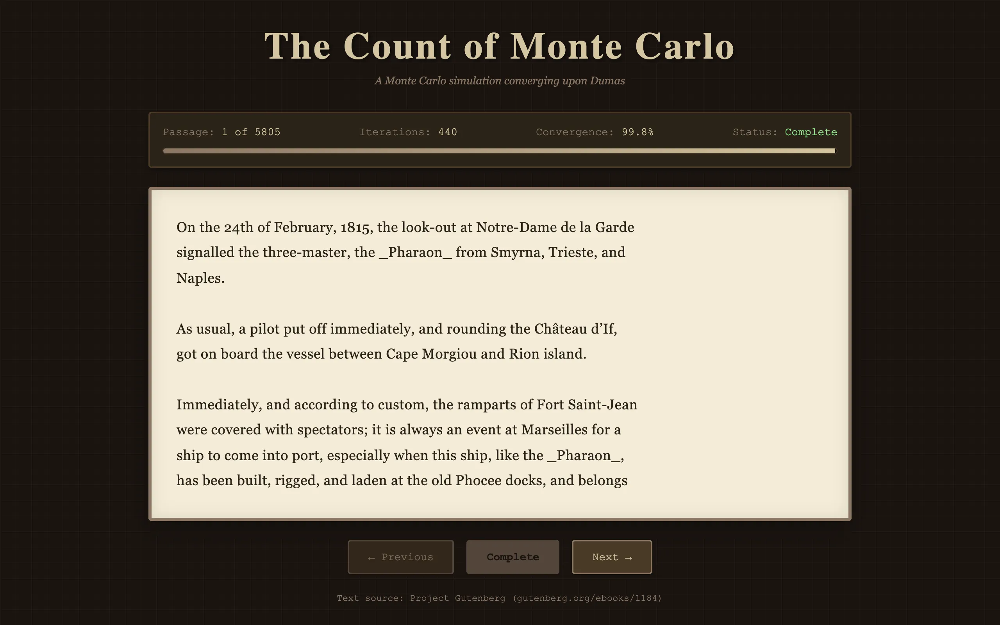
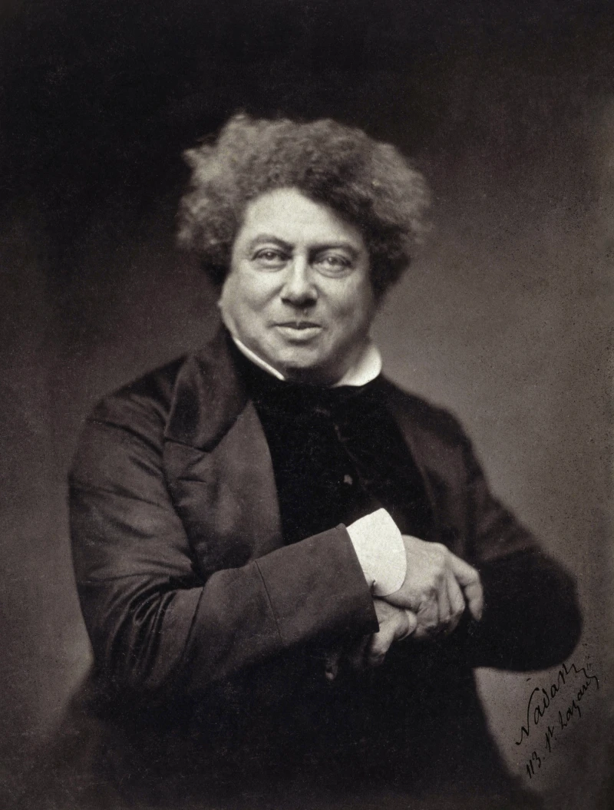
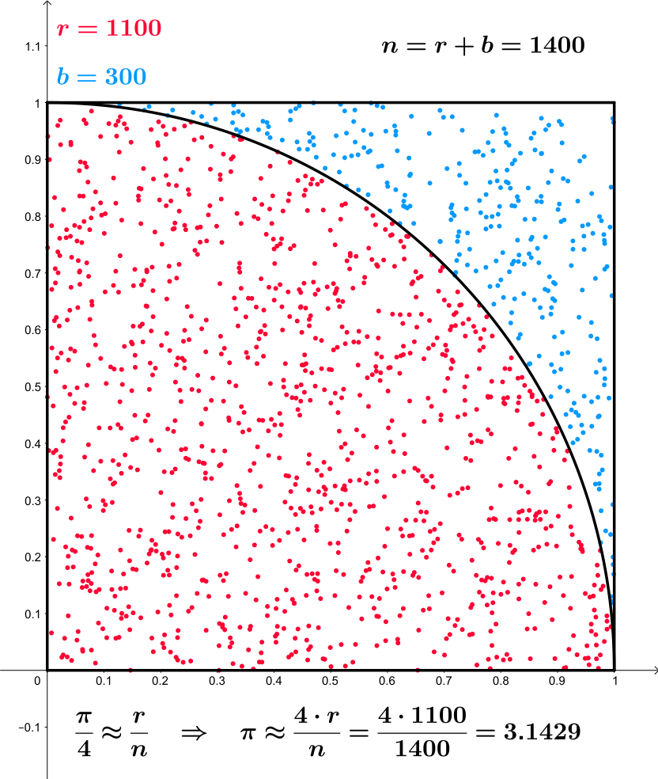

The Count of Monte Cristo by Alexandre Dumas is a long novel. A Monte Carlo simulation is a process that uses randomness to converge toward a target. Put them together and you get a simulation that starts with gibberish and gradually, character by character, converges into the text of the novel.

{kind=link}
How it works
The simulation fetches the full text of the novel from Project Gutenberg. It splits the text into passages of roughly 100 words each. For each passage, the display starts as random characters: every letter replaced by a uniformly random letter, every digit by a random digit. Spaces and newlines are preserved from the start so the text maintains its visual shape even when the content is scrambled.
Each animation frame, every incorrect character independently has probability \(p = 0.03\) of snapping to its correct value. The process is memoryless: on each frame, each of the \(n\) remaining wrong characters either resolves (with probability \(p\)) or stays wrong (with probability \(1-p\)). The number of wrong characters after \(t\) frames follows a geometric decay:
\[\mathbb{E}[\text{wrong after } t] = n(1-p)^t\]For a 500-character passage with \(p = 0.03\), the expected time to 99% convergence is \(t_{99} = \log(0.01) / \log(0.97) \approx 151\) frames. The last few characters take disproportionately long: the expected time for the final character is \(1/p \approx 33\) frames after the second-to-last resolves. This produces the characteristic "almost done, one stubborn letter" pattern where an otherwise complete paragraph has a single wrong character holding out.
The connection to Monte Carlo methods is the use of independent random trials to converge on a known target. The algorithm doesn't march left to right. It randomizes which characters get checked on each frame, so the text resolves in a scattered, organic pattern. Some characters get lucky early (the coupon collector effect means the first half converges much faster than the second half).

{kind=link}
Visual design
The interface leans into the literary theme. The background is dark brown. The text displays on a cream-colored panel with inset shadows that suggest aged paper. Typography uses Georgia and Garamond, both serif faces associated with book typesetting. A gradient progress bar tracks convergence percentage, and the stats box shows the current passage number and iteration count.
Watching the text resolve is the whole experience. The scrambled characters create a visual texture that's almost pleasant on its own, and then individual words start emerging from the noise. You'll recognize a character name before the sentence around it has finished converging. It's a small, idle thing, but it has a hypnotic quality that makes you want to watch at least a few passages all the way through.
Implementation
The entire project is a single HTML file plus the text file. No build step, no dependencies. The animation loop uses requestAnimationFrame and the convergence logic is a few dozen lines of JavaScript. The heaviest thing the browser does is the initial fetch of the novel text, which is a few megabytes. After that, everything is string manipulation and DOM updates.